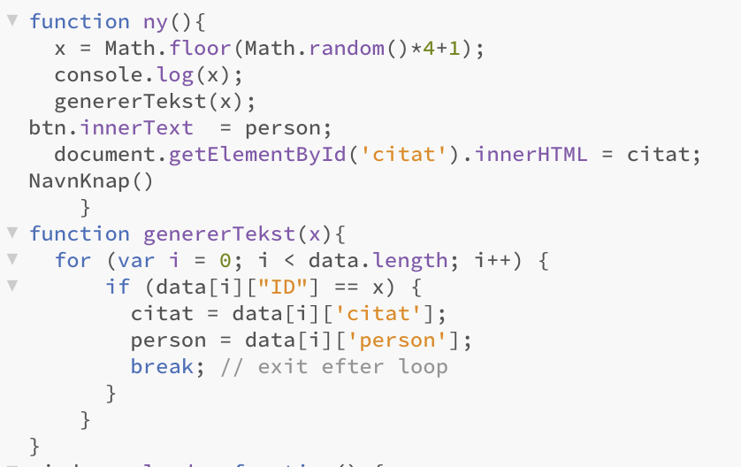

Hvad er databaser samt nogle af de vigtigste begreber inden for området
En database er en samling af data, der er organiseret på en sådan måde, at det er nemt at søge, tilføje, redigere eller slette data. Databaser bruges ofte i computere og softwareapplikationer til at gemme og håndtere store mængder af information, såsom brugeroplysninger, salgsdata, lagerbeholdninger og meget mere.
Normalisering af databaser
Normalisering af databaser handler om at organisere data på en optimal måde, hvor man undgår redundans(gentagelser eller unødvendigt data) og samtidig sikrer at der er konsistens i datasættene. Det indebærer typisk at opdele store tabeller i mindre tabeller, der hver især indeholder specifikke kategorier af data, og som kan relateres til hinanden gennem primære og fremmednøgler.
Krav til at databasen er normaliseret:
1. Primærnøglen til hver række skal være unik.
2.Alt data skal være releteret til hinanden
3. I hver kolone må der kun være en slags data. Det vil sige at i en kolone over hvem der ejer hvilken bil, må kundens tlf. nr og navn ikke stå i samme kolone.
4. Ingen rendudans
Primære- og fremmednøgler
En primærnøgle er et unikt identifikationsnummer i en tabel, som bruges til at koble data sammen og undgå gentagne eller manglende oplysninger. En fremmednøgle er et identifikationsnummer i en tabel, som refererer til primærnøglen i en anden tabel, og bruges til at etablere en relation mellem de to tabeller. Fremmednøglen sikrer desuden også at dataene i de to tabeller er opdaterede og konsistente, hvilket er en fordel når man arbejder med store databaser i firmaer.
Vores database
I forløbet skulle vi lave et projekt som var en sammenkobling mellem javascript og html. Her var javascript det som desuden sammenkoblede vores hjemmeside med en database. Selve prohjektet var at vi skulle lave en form for quiz, som kunne bruges i eksamenssæsonen. Når man koder med både javascript og html er det vigtigt at fortælle programmet hvornår den skal bruge javascript. Dette gøres ved udtrykke t<script> som fortæller at det man nu skriver skal læses via javascript. Når man så har intableret sit javascript kan man lave en knap som når man klikker på den henter oplysninger fra databasen. Hermed har man sammenkoblingen mellem hjemmeside og database.
Til højre ser du et udsnit af vores kode som jeg nu vil forklarer. Vi starter med at der
bliver lavet en funktion "ny", dette er gjort i javascript. I denne function sætter den x
til et random tal mellem 1 og 4, som er det antal rækker vi har i vores database.
Derefter logger den værdien af x og siger så at den skal sætte en bestemt knap til at
hedde "Person", når det er gjort skal den hente det citat som har det id der passer med
x-værdien. Til sidst kører den funktionen knap. Den næste funktion er den som genererer
den tekst som skal komme frem for brugeren. Den bliver kaldt genererTekst(x), hvor x siger
at den er afhængig af hvad end værdi x har. Først sætter den variablen i=0 for så derefter at
ligge en til så længe den er under databasens længde. Derefter kører den et if-statement som
siger følgende: Hvis det i'te element i dataen er ligmed x, skal den generer en tekst ud fra det
citat og den person som tilhører dette element. Derefter skal den stoppe loopet med et "break",
for at man kan kører funktionen igen på et andet tidspunkt.
